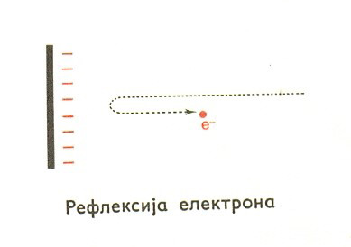

Електронски микроскопи уместо видљиве светлости и оптичких сочива користе сноп електрона, који
усмерава фокусирајући електромагнетско поље.
Као што се у геометријској оптици образовање лика проучавало коришћењем светлосних зракова, тако се
и у
електронској оптици формирање лика може проучавати коришћењем електронских зракова, који
представљају путању
снопа електрона.
Слично светлосним зрацима, електронски сноп може да буде одбијен (рефлектован), преламан и
фокусиран.
Ако електронски сноп наилази на негативно наелектрисану плочу и ако је електростатичко поље у
околини плоче довољно јако, наступиће одбијање (рефлексија) електрона.